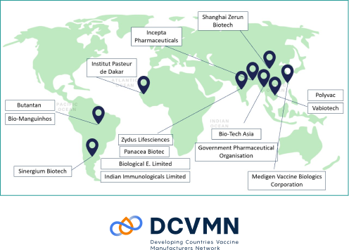

Hilleman enables biopharma industry growth through capability building programmes and talent development. Beyond our commitment to impacting global public health, we are committed to developing the biopharma and vaccine industry by investing in manpower development. We undertake capability building programmes with local, regional and global organisations to strengthen expertise in vaccine and biologics research and development, in accordance with global regulatory and quality standards.
An industry training initiative by Hilleman Laboratories in technology transfer for vaccine development and manufacturing, attended by participants globally. This programme aims to enhance the capacity and to strengthen the ability of vaccine manufacturers by equipping participants with the skills and knowhow for technology transfer, which aligns with Hilleman’s commitment to achieving wider vaccine equity and access globally.
#DCVMN (Developing Countries Vaccine Manufacturers Network) is a public health-driven alliance of vaccine manufacturers from developing countries, who are firmly engaged in research, development, manufacturing, and supply of high-quality vaccines that are accessible to protect people against known and emerging infectious diseases globally
Here’s what it looks like A government-driven initiative to build a pool of industry-ready talent, the Helix Immersion Programme provides 12-month on-the-job training, designed to equip biomedical research and academic professionals with the skillset and understanding of best practices for the pharmaceuticals and biotechnology industry. Hilleman Laboratories is proud to be a partner for the Helix Immersion Programme and is currently accepting applications.
Click here to find out more about the Helix Immersion Programme and how you can apply!